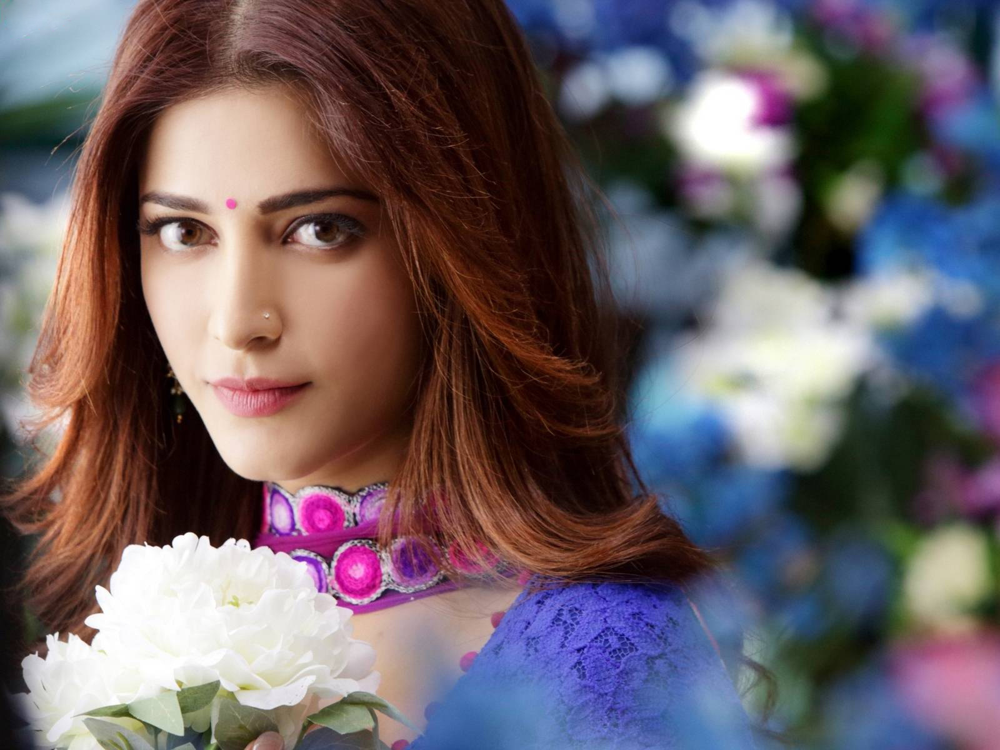
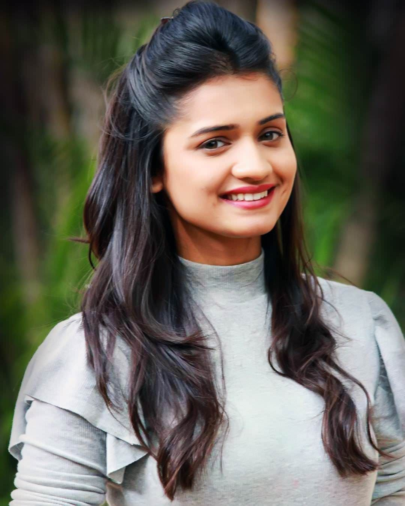

Shruti Haasan (born 28 January 1986) is an Indian film actress and singer who works predominantly in Tamil, Telugu and Hindi language films.
Shruti Haasan sang her first song aged just six in her father's Thevar Magan, a composition of Ilaiyaraaja.

A DJ mixer is a type of audio mixing console used by Disc jockeys (DJs) to control and manipulate multiple audio signals.[1] Some DJs use the mixer to make seamless transitions from one song to another when they are playing records at a dance club.
DJ mixers are usually much smaller than other mixing consoles used in sound reinforcement systems and sound recording. Whereas a typical nightclub mixer will have 24 inputs and a professional recording studio's huge mixer may have 48, 72 or even 96 inputs, a typical DJ mixer may have only two to four inputs..

Hruta Durgule is one of the new faces in Marathi television Industry. Hruta Durgule beauty led her to new heights in a short time. Hruta born on 12th September 1990 in Mumbai City.Hruta Durgule currently playing the lead role in Phulpakhru.
Hruta is originally from Ratnagiri but she raised and completed her education from Mumbai. She did her graduation from Ramnarain Ruia College, Mumbai. During college days, she particip.